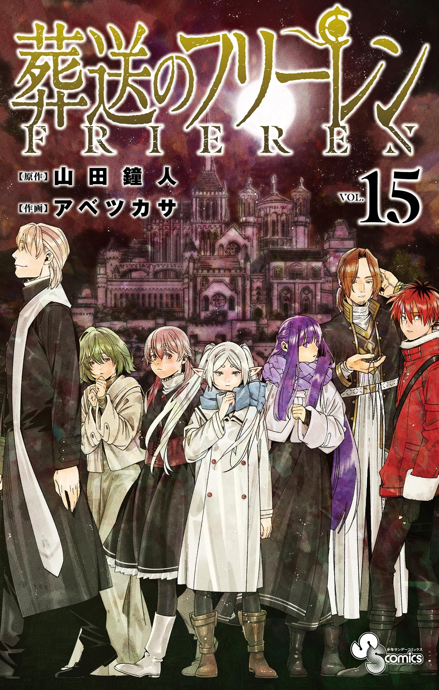
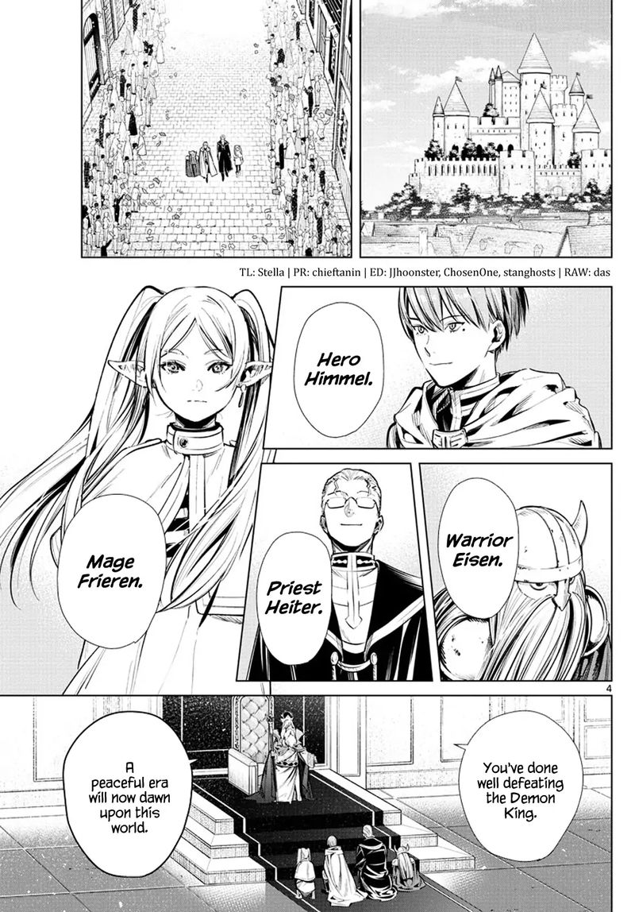

Frieren: Beyond Journey's End
by Kanehito Yamada and Tsukasa Abe
Synopsis
After the hero's party defeats the Demon King, the elf mage Frieren begins a new journey to understand humanity and the meaning of life. Having lived for over a thousand years, she struggles to understand the emotions of her former companions, especially after the death of the hero Himmel. Joined by her apprentice Fern and the warrior Stark, Frieren travels toward Aureole, the resting place of souls, while confronting her past and forming new bonds.
Chapter 1: The End of the Journey

After a ten-year adventure, Frieren and her companions—Himmel the hero, Heiter the priest, and Eisen the dwarf warrior—return home after defeating the Demon King. Because Frieren is an elf with an exceptionally long lifespan, the passage of time means little to her.
Fifty years later, Frieren reunites with her former companions to witness a meteor shower. Soon afterward, Himmel passes away, leaving Frieren to reflect on how little she truly understood him. Determined to learn more about humans
— End of chapter —